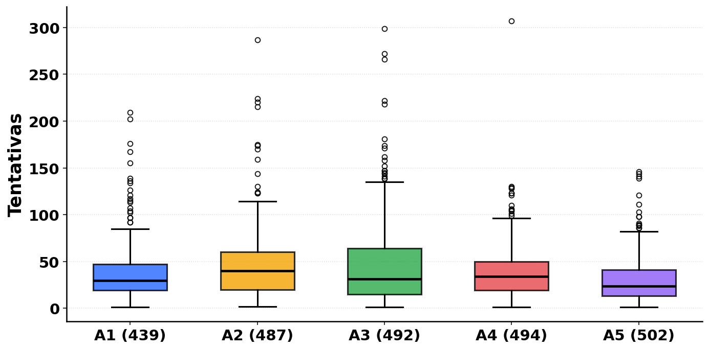
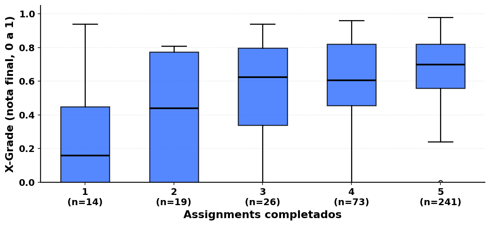
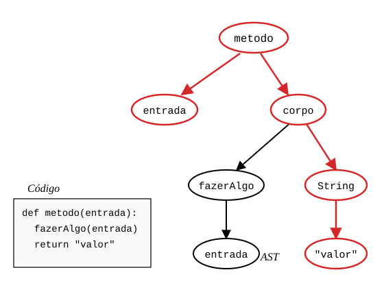
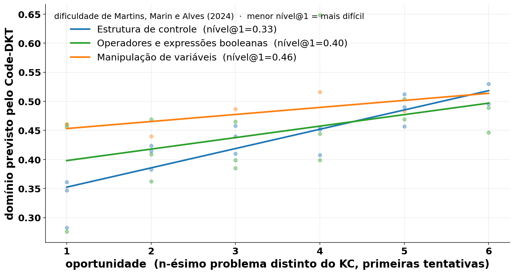

>Educational data mining e Knowledge Tracing
Erick Miranda Viana
Leonardo Kuntz Oliveira
Victor Santos Borba
Orientador(a): Profa. Me. Talita dos Reis Lopes Berbel
>introdução
O ensino de programação tem se mostrado complexo, com altos índices de reprovação e desistência nas disciplinas introdutórias de cursos de tecnologia.
Martins et al. (2024) trazem uma revisão sistemática da literatura, cujo objetivo é identificar os principais desafios enfrentados por estudantes durante a aprendizagem de programação de computadores.
Outros estudos similares também apontam que muitos estudantes possuem dificuldades relacionadas ao raciocínio lógico, abstração e conceitos técnicos de programação.
Nosso trabalho busca auxiliar na elaboração de métodos que auxiliem o processo de ensino e aprendizagem de programação, promovendo melhores resultados acadêmicos.
>mineração de dados educacionais
A mineração de dados educacionais (Educational Data Mining, EDM) combina mineração de dados, estatística e aprendizado de máquina.
Cada interação do estudante em ambientes educacionais digitais gera informações valiosas, como submissões de código, erros e tentativas de resolução.
Esses dados podem ser utilizados para identificar padrões de aprendizagem, prever desempenho e apoiar decisões pedagógicas.
Dentro da EDM, nosso trabalho está focado em um problema específico chamado knowledge tracing (KT)
>knowledge tracing
O objetivo do knowledge tracing é acompanhar a evolução do conhecimento do estudante ao longo do tempo.
Em termos práticos, dado o histórico de interações de um estudante, o modelo tenta prever se ele irá acertar ou errar a próxima atividade.
Para realizar essa previsão, os modelos utilizam os chamados knowledge components, ou KCs, que representam habilidades ou conhecimentos necessários para resolver um problema.
No contexto de programação, exemplos de KCs podem ser estruturas de repetição, condicionais e manipulação de vetores.
>Metodologia de EDM
Zorić (2020) apresenta uma das metodologias possíveis para o processo de EDM, que consiste na divisão do processo em quatro fases:
O processo é iterativo: a saída pode iniciar um novo ciclo.
>o problema
O ensino de programação é marcado por altas taxas de erro e dificuldade persistente, e atualmente carece de ferramentas que auxiliem o professor no processo de ensino.
>AS QUATRO FASES DA EDM
>o dataset csedm
Nosso dataset é o CSEDM, coletado de um curso introdutório CS1 em Java, durante a primavera de 2019 e divulgado na competição CSEDM 2021.
Armazenado em ProgSnap2 (Price, 2020), um formato de base de dados que registra cada evento de programação do estudante (edição, compilação, execução), preservando o histórico completo das tentativas a cada problema.
Cada evento traz estudante (SubjectID), problema (ProblemID), tipo (EventType), nota (Score), timestamp (ServerTimestamp) e snapshot do código (CodeStateID).
413 estudantes, 5 assignments (listas de problemas) com 10 problemas cada, e 201 mil eventos.
>como navegamos o csedm
Ao navegar o CSEDM, observamos como a participação e a taxa de acerto se distribuem entre os 5 assignments do curso.
Tabela 1 – Taxa de acerto por assignment (Spring 2019)
| Assignment | Estudantes | Participação | Problemas | Taxa de acerto |
|---|---|---|---|---|
| A1 (439) | 386 | 93,46% | 10 | 26,15% |
| A2 (487) | 340 | 82,32% | 10 | 20,06% |
| A3 (492) | 361 | 87,41% | 10 | 20,34% |
| A4 (494) | 315 | 76,27% | 10 | 24,72% |
| A5 (502) | 306 | 74,09% | 10 | 30,62% |
Fonte: elaborado pelo autor sobre CSEDM (Spring 2019).
>tentativas por assignment
O gráfico é um boxplot de mostra a relação das tentativas com cada assignment .
Figura 1 – Tentativas por assignment (Spring 2019)

Fonte: elaborado pelo autor sobre CSEDM (Spring 2019).
>engajamento e desempenho
A X-Grade é a nota final normalizada do estudante na disciplina (escala 0 a 1). Comparamos sua distribuição pelos discentes agrupados por quantos assignments completaram.
Figura 2 – X-Grade por número de assignments completados (Spring 2019)

Fonte: elaborado pelo autor sobre CSEDM (Spring 2019).
>pré-processamento
Nosso pré-processamento segue o protocolo de Shi et al. (2022). Dessa forma, podemos comparar diretamente nosso resultado ao relatado no artigo do Code-DKT.
Constatamos por meio dessa etapa que o subset apresenta 23,68% de tentativas corretas, ou seja, a mesma proporção mencionada no paper, o que demonstra que seguimos de forma fidedigna os experimentos dos autores.
Em seguida, dividimos em 328 estudantes para treino e 82 para teste, na proporção 80/20 com semente fixa.
>AS QUATRO FASES DA EDM
>modelos de knowledge tracing
Modelos de KT estimam, a partir do histórico de tentativas, a probabilidade de um estudante acertar o próximo problema.
No nosso trabalho, eles são o instrumento central para representar o aprendizado em programação, mas modelos como BKT e DKT tratam as respostas dos estudantes apenas como corretas ou incorretas, ignorando seu conteúdo.
O problema é que em áreas como programação, o conteúdo da resposta importa tanto quanto o resultado final.
>o modelo escolhido
O modelo que escolhemos foi o Code-DKT, desenvolvido por Shi et al. (2022), porque leva em consideração o código do estudante para sua previsão.
Linha do tempo do knowledge tracing
1995
Corbett e Anderson
BKT, probabilidade Bayesiana por habilidade.
2015
Piech et al.
DKT, RNN sobre o histórico de acerto/erro.
2022
Shi et al.
Code-DKT, DKT + caminhos da AST com atenção.
Modelos de knowledge tracing rastreiam unidades de conhecimento ao longo do tempo, chamadas knowledge components (KCs).
Neste trabalho, adotamos o ProblemID como KC durante o treino dos modelos.
>dentro do code-dkt
A cada submissão, o Code-DKT extrai a AST com javalang.
Code2vec transforma cada caminho folha-a-folha em vetor.
Pondera com atenção e alimenta o LSTM (Long Short-Term Memory).
A atenção realça os caminhos da AST mais informativos.
O vetor de código entra no LSTM junto com o sinal de acerto/erro.
Figura 3 – AST com caminho folha-a-folha em destaque

Fonte: adaptado de Shi et al. (2022).
>code-dkt no csedm
Comparamos os três modelos por assignment no test set do CSEDM Spring 2019; números são médias sobre 10 seeds.
Tabela 2 – First-attempt AUC por modelo e assignment (%)
| Modelo | A439 | A487 | A492 | A494 | A502 |
|---|---|---|---|---|---|
| BKT | 63,21 | 68,40 | 54,20 | 57,81 | 56,92 |
| DKT | 75,56 | 76,70 | 82,05 | 80,17 | 80,78 |
| Code-DKT | 73,27 | 79,56 | 86,12 | 81,85 | 84,98 |
| Shi (2022)* | 75,74 | – | – | – | – |
Fonte: elaborado pelo autor (10 seeds); Shi et al. (2022) Table 2.
>extração automática de kcs semânticos
No entanto, os KCs usados pelo modelo tem um problema, não são interpretáveis pelo professor.
Então, construímos um pipeline de cinco etapas para extrair knowledge components semânticos dos problemas do CSEDM.
Figura 4 – Pipeline de extração automática de KCs
Sampling n=5por problema → LLMKCs brutos → ClusteringSentence-BERT → Rotulagemnos clusters → Q-matrixpor assignment
Fonte: elaborado pelo autor; adaptado de Duan et al. (2025).
Como o CSEDM disponibiliza apenas as respostas dos estudantes sem os enunciados dos problemas, extraímos os KCs a partir das submissões corretas.
Amostramos n=5 respostas corretas por problema antes da geração.
>kcs semânticos extraídos
Os KCs semânticos extraídos pelo nosso pipeline cobrem as dificuldades de Martins, Marin e Alves (2024), mapeando cada dificuldade conceitual a padrões específicos de código.
Quadro 1 – Conceitos e knowledge components extraídos relacionados
| Conceito | KC extraído |
|---|---|
| Estrutura de controle | Branching condicional multi-caminho, iteração indexada e controle de loop, retorno antecipado em controle de fluxo |
| Manipulação de variáveis | Padrão acumulador, inicialização de variáveis, tracking de estado com índices |
| Operadores e expressões booleanas | Expressões booleanas compostas, negação booleana (NOT), comparação numérica e thresholds |
Fonte: elaborado pelo autor (KCs via KCGen-KT, Duan et al., 2025; conceitos de Martins, Marin e Alves, 2024).
>retomando o problema
“A compreensão dos conceitos técnicos da programação pode ser considerada um desafio complexo. Esta é a dificuldade mais comum entre os estudantes, mencionada por 13 autores” (Martins, Marin e Alves, 2024, p. 19).
Dificuldades enfrentadas pelos estudantes e o número de ocorrências nos estudos analisados por Martins et al. (2024):
>retomando o problema
“Destaca-se que o entendimento das estruturas de controle é o conceito mais desafiador para os estudantes, citado por 10 autores” (Martins, Marin e Alves, 2024, p. 20).
Martins et al. (2024) subdividem essa dificuldade em conceitos técnicos específicos (nº de autores que citam cada um):
>dificuldade por conceito
Figura 5 – Curvas de aprendizado por conceito estimadas pelo Code-DKT, agrupadas por Martins

Fonte: elaborado pelos autores (estimativa do Code-DKT, Shi et al., 2022; conceitos via KCGen-KT, Duan et al., 2025; dificuldades de Martins, Marin e Alves, 2024).
>AS QUATRO FASES DA EDM
>metas do tcc 2
Para o TCC 2, nos propomos a desenvolver uma aplicação docente que organiza o fluxo em seis etapas.
Figura 6 – Fluxo da aplicação docente proposta
Import ProgSnap2 → Extração de KCs → Docente valida → Preparação dos dados → Code-DKT → Dashboard
Fonte: elaborado pelo autor; baseado em docs/tcc2_prototipo.html.
A ideia é o professor conseguir mapear os padrões da turma durante o andamento de sua disciplina, ajustando, assim, suas aulas conforme o estágio de aprendizado da turma.
>AS QUATRO FASES DA EDM
>obrigado